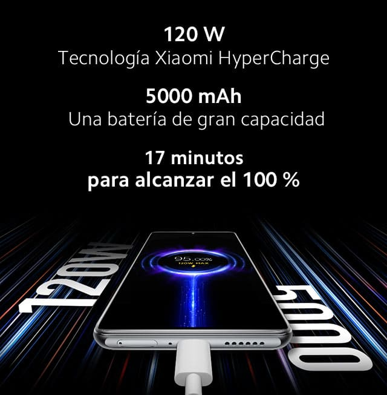
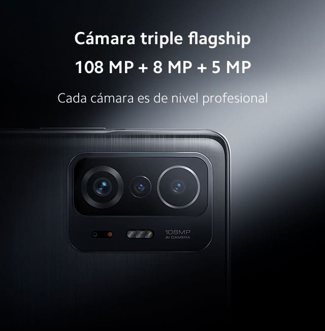
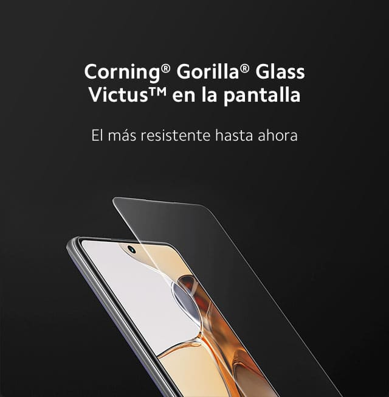

Descripción del producto. Cámara de calidad profesional de 108MP | Xiaomi HyperCharge de 120W | Pantalla AMOLED de 120Hz, compatible con Dolby Vision® | Qualcomm® Snapdragon™ 888
  CINEMAGIA: Este dispositivo te ofrece el soporte que necesitas para cada etapa del proceso de creación de contenido, desde increíbles fotografías, espectaculares visuales, hasta grabación de video con calidad profesional; la máxima experiencia cinematográfica, ideal para contar las historias que te mueven. Más de mil millones de colores en una pantalla plana AMOLED. Fluidez y nitidez perfecta en la imagen. Con excelente rendimiento en brillo, relación de contraste, calibración de color y resolución. Esta pantalla ha recibido una calificación A+ de DisplayMate, una de las agencias de evaluación de pantallas más confiables del mundo. Compatible con Dolby Vision® y Dolby Atmos®. Experiencia de audio inolvidable. Te ofrecemos una experiencia sonora más refinada, gracias al SONIDO POR Harman Kardon. Los altavoces duales específicos producen un sonido envolvente de 360° con gran calidad. Xiaomi HyperCharge de 120W, carga al 100% en 17 minutos. Muchas horas de uso con sólo 10 minutos de carga: 7 horas de reproducción de video, 11 horas de llamadas, 5 horas de navegación, 2 horas de grabación de video a 1080p. Triple cámara insignia. Captura todo lo que la vida te ofrece. Cámara principal de 108MP: Fotos impecables en cualquier ocasión. Sensor de imagen de gran tamaño. Superpixel 9 en 1 de 2.1μm. ISO nativo dual. Cámara ultra gran angular con campo de visión de 120° . Captura las ocasiones más importantes de la vida. El mundo en miniatura bajo la cámara telemacro de 5MP es igual de espectacular. Cámara selfie en pantalla de 16MP. Selfies que reflejan lo mejor de ti. Procesador Qualcomm® Snapdragon™ 888 5G*. Su procesador de 5nm mejora el rendimiento de la CPU en un 25%, y el rendimiento de la GPU en un 35%, en comparación con la generación anterior. Esto permite un rendimiento sin precedentes y un consumo de energía más eficiente. Corning® Gorilla® Glass Victus™ en la pantalla. El Gorilla® Glass más resistente hasta ahora.